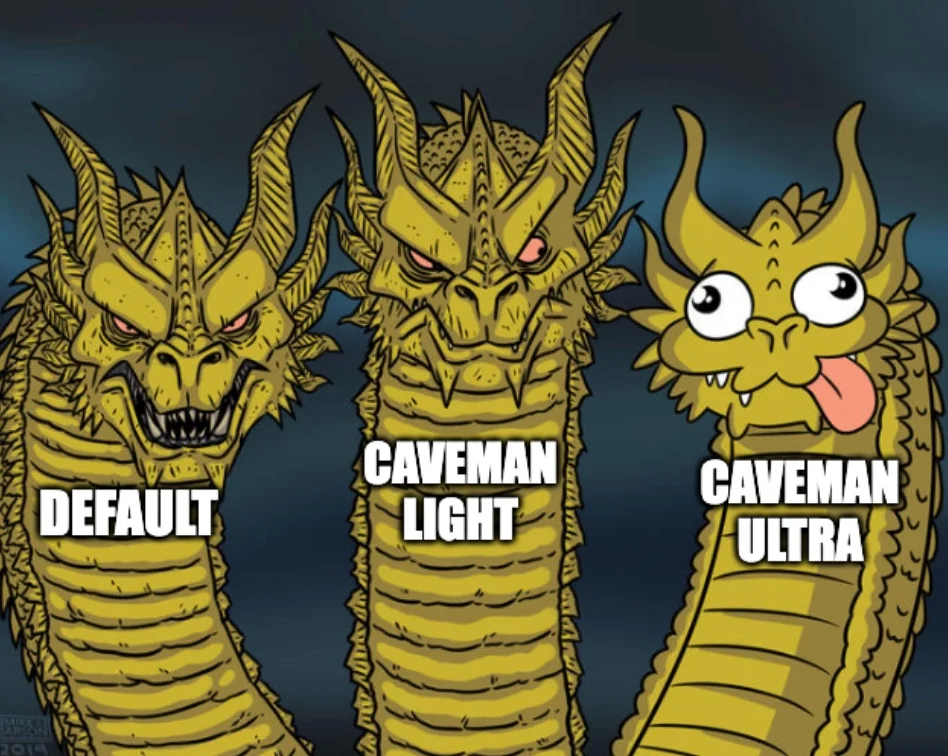

Design patterns¶
Design patterns are typical solutions to commonly occurring problems in software design. They are like pre-made blueprints that you can customize to solve a recurring design problem in your code. 1 You may know some famous patterns like Strategy, Facade or Factory.
It turns out that there is an equivalent concept for agentic primitives (which also strengthens the idea that we should treat agentic primitives as code, not as part of documentation).
graph LR
classical["Classic design patterns"]
agentic["Agentic design patterns"]
classical -- "Concepts transferred" --> agenticAn agentic design pattern is a reusable solution to coordination challenges in LLM driven systems where execution paths are decided at runtime rather than hardcoded in advance. While traditional software patterns assume deterministic components and static control flow, agentic patterns coordinate probabilistic models that dynamically invoke tools, revise intermediate results, or hand off work to other agents. 2
Only selected architectural patterns and anti-patterns for agentic workflows are presented. For the full pattern catalogue see the resources used.
Vocabulary Alert
Some of the design pattern names may seem like buzzwords and overwhelming jargon at first. But after familiarizing yourself with them, they provide a robust vocabulary making conversations richer, going beyond "I told Claude to make it work, make no errors."
Tiers of patterns¶
graph TD
R["Refactor patterns"]
A["Tier 3: architectural patterns"]
subgraph Tier2["Tier 2: design patterns"]
C["Creational"]
S["Structural"]
B["Behavioral"]
end
H["Tier 1: harness idioms"]
P["Tier 0: substrate primitives"]
R --> A
A --> C
A --> S
A --> B
C --> H
S --> H
B --> H
H --> PPatterns from Tier 3 are composed of Tier 2 patterns. For example, the A1. PANEL is represented as:
Where:
- \(\text{B1}\) (Fan-out and synthesizer): coordinates fan-out topology and synthesis.
- \(N \times \text{C2}\) (Persona preload): instantiates \(N\) specialized review lenses in isolated contexts.
- \(\text{S4}\) (Validation decorator): gates the synthesized verdict.
- \(\text{B4}\) (Plan memento): persists the deliberation outcome to storage.
| Pattern family | Primary responsibility |
|---|---|
R (Refactor) |
Module boundary hygiene, decomposing monoliths |
A (Architectural) |
Multi-agent execution graphs, macro flows |
C (Creational) |
Context isolation, persona scoping, lazy assets |
S (Structural) |
Deterministic tool bridges, validation gates |
B (Behavioral) |
Dynamic coordination, attention anchoring, plan memory |
Primitive relations¶
APM packages structure capabilities into distinct relation types:
graph TD
subgraph Package["Local package"]
Inline["Inline skill"]
SiblingSkill["Sibling skill"]
Asset["Sibling asset"]
Subagent["Sibling subagent"]
end
External["External package"]
User(["User"]) -->|"Invokes"| Inline
User -.->|"Direct dispatch"| SiblingSkill
Inline -->|"Delegates to"| SiblingSkill
Inline -->|"Loads on demand"| Asset
Inline -->|"Spawns child thread"| Subagent
Subagent -->|"Runs CLI or script"| Tools["System tools"]
External -.->|"Reused via apm.yml"| Inline- Inline: Content and logic that live directly within the primitive's own file, executing in the active session context with no dependency edges.
- Sibling: Primitives (such as specialized skills, lazy assets, or child subagents) colocated in the same local package, referenced on demand or dispatched independently without crossing distribution boundaries.
- External: Upstream packages pulled from external repositories and pinned via
apm.yml, crossing distribution boundaries for multi-project reuse. - Other (Runtime tool affordances): Deterministic execution bridges (CLI utilities, compilers, scripts) that are runtime mechanisms rather than prompt primitives, invoked by subagents to interact with the system environment.
Selected design patterns¶
Some of the patterns that will come in handy in the practical exercises.
Pattern summary¶
| Pattern | Category | Classical analog | Solves | Prevents |
|---|---|---|---|---|
C1. LAZY ASSET |
Creational | Lazy Initialization | Heavy templates loaded on every turn | EAGER BLOAT |
C2. PERSONA PRELOAD |
Creational | Constructor / Scoped Object | Model drifting or rewriting out of scope | UNPROMPTED DRIFT |
C3. THREAD SPAWN |
Creational | Factory Method / Process Isolation | Verbose output flooding the primary context | FAN-OUT-IN-ONE-CONTEXT |
S3. ORCHESTRATOR FACADE |
Structural | Facade | Fragmented multi-step execution | GOD MODULE, STUB ORCHESTRATION |
S4. VALIDATION DECORATOR |
Structural | Decorator / Assertion Gate | Silent failures passing downstream | WRAPPING WITHOUT BLOCKING |
S7. DETERMINISTIC TOOL BRIDGE |
Structural | Adapter / HAL | LLM guessing build status or facts | TOOLLESS ASSERTION |
B2. CONDITIONAL DISPATCH |
Behavioral | Strategy | Loading every rule branch up front | ALL-BRANCHES-LOADED |
Anti-patterns reference¶
| Anti-pattern | Description | Why it fails | Countermeasure |
|---|---|---|---|
GOD MODULE |
Single prompt handling all tasks | Attention degradation, untestable | R1. SPLIT + S3. ORCHESTRATOR FACADE |
ALL-BRANCHES-LOADED |
Preloading every rule and edge case | Wasted input tokens, prompt bloat | B2. CONDITIONAL DISPATCH |
FAN-OUT-IN-ONE-CONTEXT |
Running verbose CLI logs in main chat | Context window pollution, cache breaks | C3. THREAD SPAWN |
EAGER BLOAT |
Inlining large templates in skill body | High token cost per turn | C1. LAZY ASSET |
STUB ORCHESTRATION |
Wrapper without sequencing or gates | Cascading silent failures | S4. VALIDATION DECORATOR |
TOOLLESS ASSERTION |
LLM claiming success without tool check | Hallucinated facts and false positives | S7. DETERMINISTIC TOOL BRIDGE |
WRAPPING WITHOUT BLOCKING |
Logging errors but continuing anyway | Compounding failures downstream | Halting gates on non-zero exit status |
UNPROMPTED DRIFT |
Agent altering text or code outside scope | Corrupted manuscript or codebase | C2. PERSONA PRELOAD with scoped tools |
Fun fact: Caveman¶
Caveman 3 project proposed the idea of saving tokens by making the agent talk like a caveman. Thus simplifying the language and cutting tokens aggressively.

The behavioral patterns formalize the Caveman concept, especially for agent-agent communication. The Caveman channel (B14b/c) uses high-density briefs and structured JSON receipts:
graph TD
Parent["Parent orchestrator"]
Child["Child subagent"]
Parent -- "Telegraphic brief (~80 tokens)" --> Child
Child -- "Runs deterministic tool" --> Child
Child -- "JSON receipt (~40 tokens)" --> Parent- Spawn brief: Drops articles and politeness; retains exact paths, commands, and constraints.
- Receipt: Minimal JSON object (
status,artifact_path,error_digest) keeping parent context clean.
-
Alexander Shvets, "What's a Design Pattern?", Refactoring Guru. ↩
-
Molisha Shah, "What Are Agentic Design Patterns? 2026 Pattern Catalog", Augment Code, 2026. ↩
-
Julius Brussee, "caveman-code", GitHub. ↩